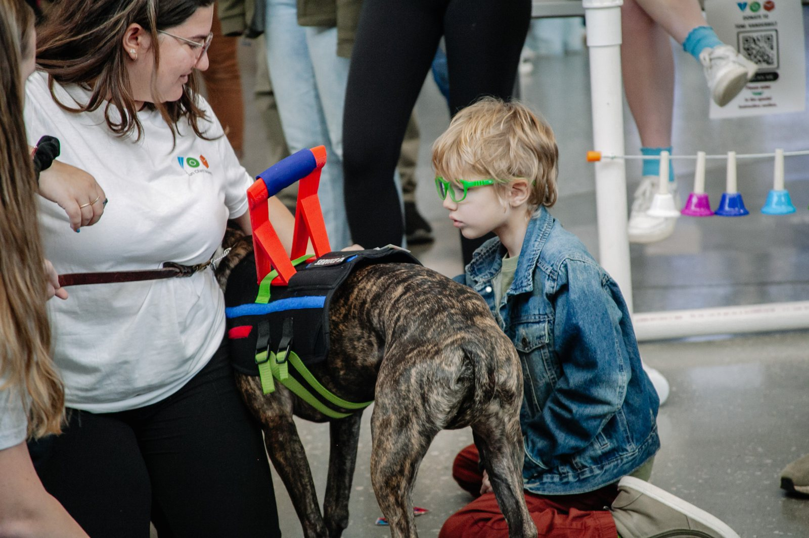
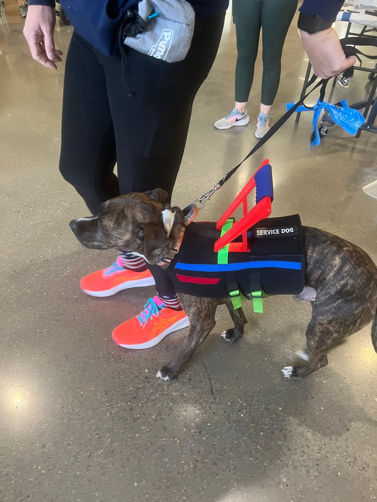
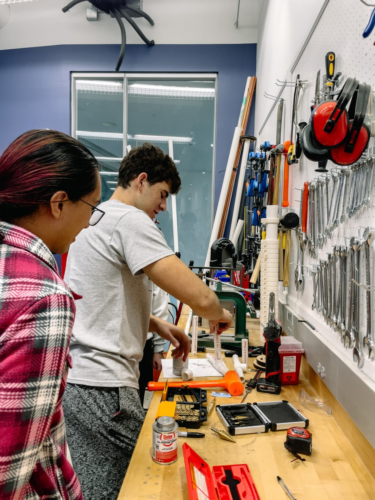
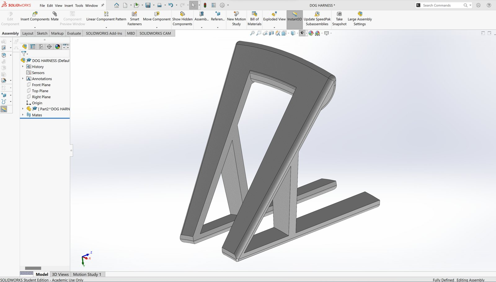

Dog Harness for Tikkun Olam Makers 2023
Vanderbilt University

User Centric Design
Working on a multidisciplinary team of four, I worked directly with our need knower and his family to best suit their needs and considerations. The harness solves many issues that his old harness presented. These included: it was too heavy, it did not stand upright so was uncomfortable for the dog, and the user had no incentive to hold the harness.
The Solution
To make the harness lightweight, I created an ABS 3D printed handle that directly fit the shape of the dog. We also make the handle fully detachable with from the harness to allow it to be completely machine washable. The harness itself was created out of an old wetsuit material, and is easy to slip on the dog with two buckles. Finally, to increase user engagement, we added colored Velcro straps so he could put themed patches on each side of the dog.


3 Days to Complete a Working Model
After planning the design for weeks, we had three days to complete the product in the Tikkun Olam Makers maker fest. We first prototyped and tested with various materials like PVC pipe, and cardboard. We worked continuously with the the user and the dog to get constant feedback on our design process.
CAD Model
This is the CAD model of the 3D printed handle designed to be strapped on the harness. The two "beams" on the bottom were designed to be the mounting points for straps and match the curve of the dog's back. The beams in the middle are to decrease the moment about the corner and to distribute the force evenly. The handle was designed to ergonomically fit our need knowers hand comfortably. The entire handle was designed to be completed in one 3D print.
